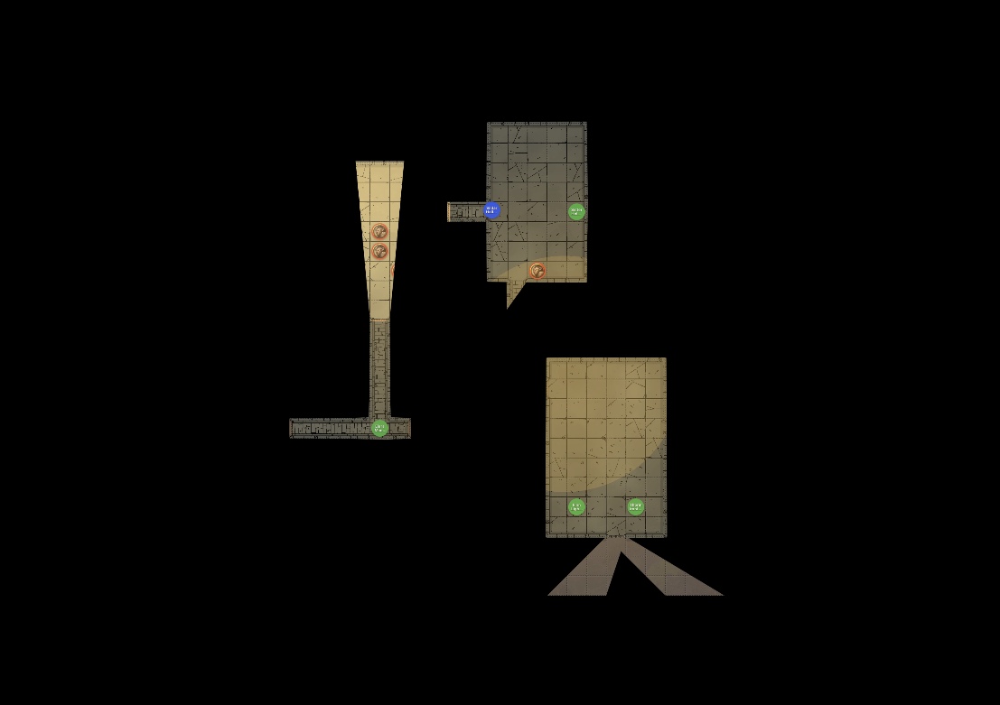
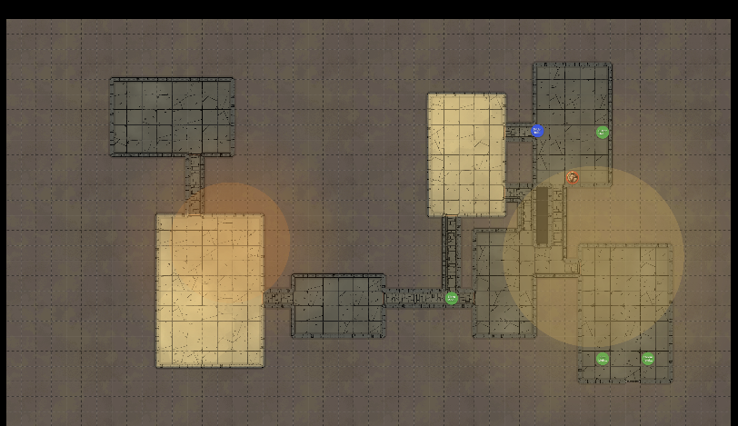

Player Display Setup
This tutorial walks you through setting up and using the Player Display - a second window that shows your players what their characters can see while you maintain full DM control.
Time to complete: 5 minutes
What you’ll learn:
- Set up a second screen for players
- Open and control the Player Display
- Understand what players see vs. what you see
- Use Blackout mode for dramatic reveals
Prerequisites
- Completed Tutorial 3 (Play Mode basics)
- Ideally: a second monitor, TV, or projector for players
The Two-Screen Setup
The Player Display creates a two-screen experience:
| Your Screen (DM) | Player Screen |
|---|---|
| Full map with all tokens | Fog of war applied |
| Monster names and stats | Token images only |
| Hidden tokens visible | Hidden tokens invisible |
| All controls and tools | Clean, focused view |
This lets you manage everything behind the scenes while players see only what their characters would see.
Step 1: Connect Your Second Screen
Before opening the Player Display, connect your second screen:
- TV or Monitor - HDMI/DisplayPort connection
- Projector - For tabletop projection
- Extended Display - Not mirrored (each screen shows different content)
Display Arrangement
On your computer:
- Open display settings
- Set to “Extend” (not “Mirror”)
- Arrange screens to match physical layout
- Note which screen is secondary
Step 2: Enter Play Mode
- Open your campaign
- Go to the Modules tab
- Select a module and click Play
- Make sure a map is active (click one in the sidebar)
Step 3: Open the Player Display
In the Play Mode header:
- Click the Player Display button
- A new window opens
- The button changes to show “Display Open”

Position the Window
Drag the Player Display window to your secondary screen:
- Click and hold the window title bar
- Drag to the player-facing screen
- Maximize the window (or press F11 for fullscreen)
Tip: On macOS, you can use Mission Control to move windows between spaces. On Windows, use Win+Shift+Arrow keys.
Step 4: Understanding the Views
What You See (DM View)

Your view shows everything:
- All tokens (visible and hidden)
- Monster names and quantities
- Full toolbar and controls
- Line of sight visualization (debug mode)
- Session notes panel
What Players See


The player display shows:
- The map image
- Fog of war based on PC positions
- Visible tokens only (no hidden enemies)
- Token images without names
- No controls or UI elements
Step 5: Controlling What Players See
Fog of War
Fog of war updates automatically based on:
- Where PC tokens are positioned
- Their vision radius (including darkvision)
- Active light sources
- Walls and obstacles (UVTT maps)
Move a PC token and watch the fog update in real-time on both screens.
Reveal Map Toggle
For situations where you want to show the whole map:
- Find the Reveal Map toggle in the toolbar
- Enable it to bypass fog of war
- Disable it to restore fog of war
Use this for:
- Area maps without exploration
- Post-combat wrap-up
- Location reveals
Ambient Lighting
The ambient light level affects visibility:
| Level | Effect |
|---|---|
| Bright | Normal visibility, full colors |
| Dim | Reduced visibility, muted colors |
| Dark | Only darkvision and light sources work |
Change this to match the in-game environment (dungeon, night, etc.).
Step 6: Using Blackout Mode
The Blackout button (eye icon) appears when the display is open:
- Click Blackout to hide everything from players
- The player screen goes completely black
- Click again to restore the view
When to Use Blackout
- Before the session - Set up tokens without revealing
- Dramatic reveals - Build anticipation
- Breaks - Bathroom/snack breaks
- Map transitions - Switch maps without showing the change
- Plot moments - Describe what happens before showing it
Step 7: Syncing Views
Control whether players see your exact viewport:
Auto-Sync (Default)
- Your pan and zoom are mirrored
- Players see what you focus on
- Great for guided exploration
Manual Sync
- Click the Sync button to disable auto-sync
- Navigate freely on your screen
- Click Push View when ready to update players
Use Cases
| Scenario | Sync Setting |
|---|---|
| Guided dungeon crawl | Auto-sync ON |
| Combat positioning | Auto-sync OFF, push when ready |
| Looking ahead secretly | Auto-sync OFF |
| Theater of the mind | Blackout ON |
Step 8: Closing the Display
When your session ends:
- Click Player Display button again, or
- Close the player display window directly
- The button returns to its original state
The main Play Mode continues - you can reopen the display anytime.
Physical Setup Tips
TV/Monitor Setup
- Position so all players can see
- Adjust brightness for room lighting
- Consider a TV mount or stand
Projector Setup
- Project onto table or wall
- Calibrate for grid accuracy
- Consider ambient light levels
Virtual Setup
- Share the player window via screen share
- Use a separate browser window for remote players
- Consider latency for viewport updates
Quick Reference
| Action | How To |
|---|---|
| Open player display | Play Mode → Player Display button |
| Close player display | Click button again or close window |
| Blackout | Eye icon (when display open) |
| Reveal entire map | Reveal Map toggle |
| Change lighting | Ambient light dropdown |
| Sync views | Sync button (toggle) |
| Push current view | Push View button |
Troubleshooting
Display Opens on Wrong Screen
- Drag window to correct screen
- Maximize after moving
Players See Hidden Tokens
- Check token visibility settings
- Ensure “visible to players” is off for hidden tokens
Fog Not Updating
- Verify PC tokens are marked visible
- Check that PCs have a token on the active map
- Confirm UVTT wall data loaded (for wall occlusion)
No Second Window
- Check popup blocker settings
- Try clicking the button again
- Restart Play Mode
Next Steps
You’ve completed the tutorial series! You can now:
- Create and manage campaigns
- Build adventure modules with maps and encounters
- Run sessions with fog of war
- Use a second screen for players
Explore the How-To Guides for specific tasks, or check the Reference for detailed documentation.
Return to: Tutorials Overview